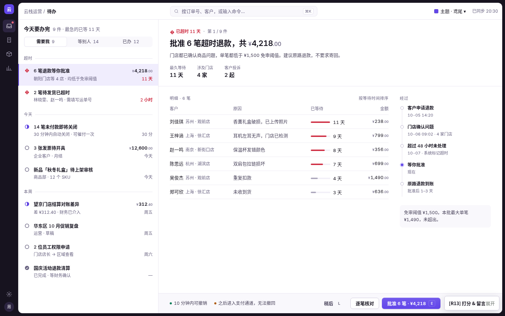
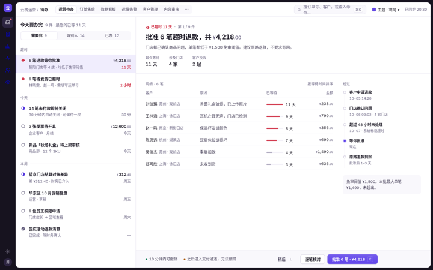
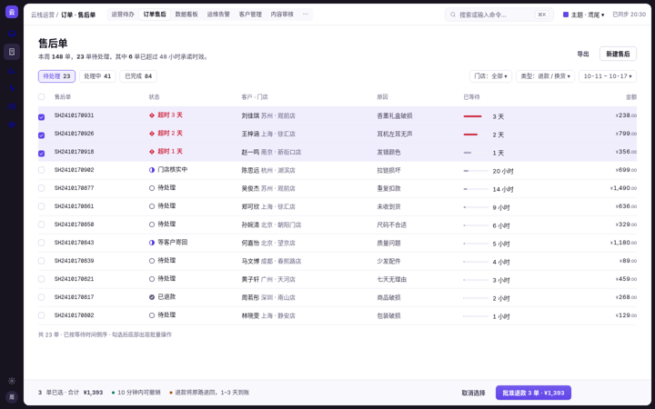
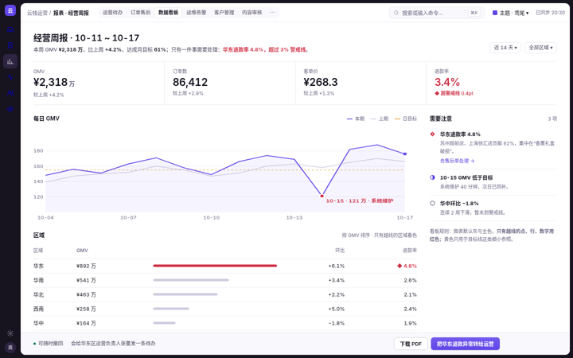
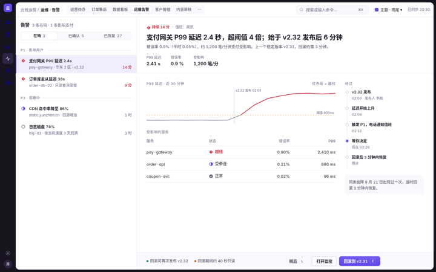
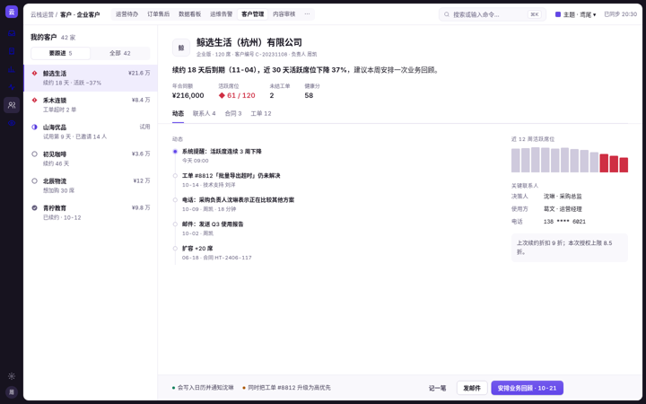
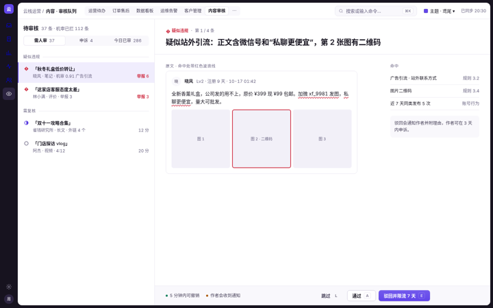

这套语言只做一件事：让人在任何组件库里，都能更快地看懂、核对、做决定、离开。它不规定按钮长什么样，只规定东西该“怎么说话”——谁最重要、什么时候能用颜色、线有多重、空白有多大。

打开可操作的演示 → J / K 切换 · E 批准 · Z 撤销界面按“办事的顺序”排：左边队列、右边当前事、底部后果与按钮。办完自动接下一件。
阶段看形状（○ ◐ ● ◆），颜色只留给异常。一屏的红色就是这一屏的问题。
深色框架里嵌一整张工作纸，纸上只有发丝线和留白；没有卡片墙、没有彩色色块。
只有一个主色按钮
02形状分阶段，红色只给异常
03原地办完，自动到下一件
04能纵向比较
05线只有一档：1px 浅线
06画布 → 纯白，不靠投影
07组内 · 组间 · 区块
08靠字重强调，不靠放大
09按钮说出动作和数量
10空 · 加载 · 出错
11行高 40，次要信息降级
122px 主色实线外框
所有业务页都套这一个骨架。图标轨只放“去哪”，顶栏只放“在哪 + 搜索/命令”，主操作永远钉在当前事底部的后果条右端。
骨架和规矩不变，按任务性质选页面模式。点卡片打开演示，演示之间有顶部导航互通。全部见 演示总览 →

一天要办完的 9 件事排成队列，右侧当场批准 6 笔超时退款，J/K/E/Z 键盘流转。

售后单表格 + 筛选；勾选后底部出现后果条，按钮实时写出单数和金额。

经营周报：一句结论 + 4 个关键数 + 走势图；只有越线的点、行、数字是红色，黄色只做目标线。

支付网关延迟告警：结论写清起因和影响，曲线只把越线段标红，主操作是“回滚到 v2.31”。

企业客户档案：先写“续约 18 天后到期、活跃下降 37%”，再给动态时间脊和下一步。

待审内容逐条处理：原文命中处红色波浪线，右侧命中规则，驳回 / 通过都可撤销。
| 模式 | 什么时候用 | 骨架怎么变 | 不变的 | 演示 |
|---|---|---|---|---|
| 队列 | 一件件处理、每件都要做决定（审批、告警、审核） | 队列 400 + 当前事；办完自动下一件 | 图标轨 + 工作纸；结论句在最前；状态字形 ○◐●◆，只有异常是红色；一屏一个主操作，钉在后果条右端，写清能否撤销 | 运营待办 · 运维告警 · 内容审核 |
| 列表 | 同类记录很多，要筛选、比较、批量处理 | 整宽表格 + 筛选条；后果条只在勾选后出现，按钮带数量和金额 | 订单售后 | |
| 看板 | 看整体状况、找异常 | 标题句 + 关键数 + 图表 + “需要注意”栏；图表用灰色和主色，越线才标红，黄色只做目标线 | 数据看板 | |
| 记录详情 | 围绕一个对象（客户、合同）长期跟进 | 窄队列 300 + 档案：结论 → 关键数 → 页签 → 动态时间脊；后果条给“下一步” | 客户管理 |
左边是本语言的做法，右边是常见但被禁止的做法。两边内容完全相同，只差规矩。
为什么：主色按钮是“下一步该做什么”的唯一答案。出现两个，就等于没有答案。
--role-action · 其余用次按钮 / 文字按钮
为什么：阶段靠形状读：空心圈 = 待办，半圈 = 进行中，实心勾 = 完成，菱形 = 异常。只有异常着红色，所以一屏里红色一出现就是“出事了”；色盲、黑白打印也照样读得懂。
○ ◐ ● ◆ · 14px · 只有 ◆ 用 --role-danger，进行中可用主色
| 2410-0917 | 已完成 |
| 2410-0918 | 配送中 |
| 2410-0920 | 待发货 |
| 2410-0919 | 超时 2 天 |
| 2410-0917 | ● 已完成 |
| 2410-0918 | ● 配送中 |
| 2410-0920 | ● 待发货 |
| 2410-0919 | ● 超时 2 天 |
为什么：后台的一天是“一件接一件地办”。左边是排好序的队列，右边把当前这一件摊开办完：结论 → 明细 → 经过 → 后果与按钮。不跳页、不弹窗，办完自动到下一件（J / K 切换，E 执行，Z 撤销）。
队列 400 · 当前事 自适应 · 后果条固定在底部
为什么：金额要上下比较大小。等宽数字（tabular）+ 右对齐，个位对个位，一眼看出谁大。
font-variant-numeric: tabular-nums · ¥ 与小数降一级
| 门店 | 实付 |
|---|---|
| 朝阳 | |
| 望京 | |
| 国贸 |
| 门店 | 实付 |
|---|---|
| 朝阳 | ¥12480 |
| 望京 | ¥968.5 |
| 国贸 | ¥1111.00 |
为什么：线是用来分隔的，不是用来装饰的。只有一档浅色 1px 线，内容才是主角。
--color-hairline #E9E6F1 · 禁止 2px+ 边框与深色描边
| 朝阳门店 | 128 单 |
| 望京门店 | 96 单 |
| 国贸门店 | 71 单 |
| 朝阳门店 | 128 单 |
| 望京门店 | 96 单 |
| 国贸门店 | 71 单 |
为什么：只有两层：画布画布、纯白纸面。投影留给真正浮起来的东西（弹窗、抽屉），否则满屏都在漂。
--role-canvas → --role-surface · --shadow-pop 只给浮层
为什么：间距表达关系：越近越相关。只用三档，关系就一眼可读；随手写 13、19、27，页面就散了。
--rhythm-in 8 · --rhythm-group 16 · --rhythm-block 32
为什么：12 / 13 / 14 / 16 / 20 / 24 / 28。档位少，层级才清楚。要强调某个数字，加粗而不是放大。
--fs-12 … --fs-figure · 行高落 4px 网格
为什么：“确定吗？”什么也没说。要写清楚会发生什么、能不能撤销，按钮上直接说出动作和数量。
--role-danger 只用于确认按钮 · 默认焦点落在“取消”
为什么：空、加载、出错是常态。每一种都要说明“为什么这样”和“现在可以做什么”，不留死胡同。
空：原因 + 下一步 · 加载：骨架行 · 出错：影响范围 + 重试 + 编号
为什么：后台要一屏看得多，但不能挤。行高 44（紧凑 36），主信息正文色，次要信息降一级灰，操作悬停时才出现。
--row-h-default 44 · --row-h-compact 36 · text-2 / text-3
| 订单 | 客户 | 实付 |
|---|---|---|
| #2410-0917 朝阳门店 | 王先生 | |
| #2410-0918 望京门店 | 李女士 |
| 订单 | 门店 | 客户 | 实付 | 操作 |
|---|---|---|---|---|
| 2410-0917 | 朝阳门店 | 王先生 | 612 | 查看 编辑 删除 复制 |
| 2410-0918 | 望京门店 | 李女士 | 1012 | 查看 编辑 删除 复制 |
为什么：用键盘的人要知道自己在哪。焦点是 2px 主色实线外框，离开元素 2px，不靠颜色变化暗示。（试试按 Tab）
--focus-outline 2px solid · --focus-offset 2px
组件只认角色，不认色值。换主题时只换取值，角色和处理方式不变。
| 角色 | 样本 | 视觉处理 | 令牌 |
|---|---|---|---|
| 框架（侧栏） | 深色或浅色侧栏，只做框架，不与主操作抢；承担“这是一个工具”的身份 | --role-frame | |
| 画布 | 画布，所有纸面的底 | --role-canvas | |
| 纸面 | 纯白，1px 发丝边，不浮起 | --role-surface | |
| 主操作 | 主色实底，每屏 1 个，写出动作 + 数量 | --role-action | |
| 次操作 | 纸底 + 1px 强边 | --role-border-strong | |
| 轻操作 | 无边无底，悬停才出底色 | --role-text-2 | |
| 危险操作 | 只出现在确认层里，配后果说明 | --role-danger | |
| 状态 · 成功 / 进行 / 注意 / 异常 | 6px 圆点 + 文字；只有“异常”允许文字着色 | --role-success … danger | |
| 正文 / 次要 / 辅助 | 正文 次要 辅助 | 三级文字，不再用更多灰 | --role-text-1/2/3 |
| 数字 / 金额 | 等宽右对齐，¥ 与小数降级 | tabular-nums | |
| 分区标签 | 今日概况 —— | 11px 疏排 + 延伸发丝线，代替卡片标题 | --eng-* |
| 焦点 | 2px 主色实线，偏移 2px | --focus-outline |
下面是当前这一套值。换成别的值也可以，只要仍满足 12 条规矩（例如主操作对白字对比 ≥ 4.5:1（AA）、状态色不做大面积底色）。
#17131F#6246EA#F5F4F9#FFFFFF#E9E6F1#CF2F44#12805C12 / 1613 / 2014 / 2216 / 2420 / 2824 / 3228 / 328163240610324436232上排：Ant Design 5 与 MUI 的默认外观（示意）。下排：只改主题配置、不改组件代码之后。
// ConfigProvider theme
token: { colorPrimary:'#6246EA', colorBgLayout:'#F5F4F9',
colorBgContainer:'#FFFFFF', colorBorderSecondary:'#E9E6F1',
colorError:'#CF2F44', colorSuccess:'#12805C',
borderRadius:6, controlHeight:32, fontSize:14,
boxShadow:'none', wireframe:false }
components: { Table:{ cellPaddingBlock:12, headerBg:'#F9F8FC' },
Tag: // 不用 Tag 表示状态 → 用 Badge status + 文字 }// createTheme
palette:{ primary:{main:'#6246EA'}, error:{main:'#CF2F44'},
background:{default:'#F5F4F9', paper:'#FFFFFF'}, divider:'#E9E6F1' },
shape:{ borderRadius:6 }, shadows: Array(25).fill('none'),
typography:{ fontSize:14, button:{ textTransform:'none', fontWeight:550 } },
components:{ MuiButton:{ defaultProps:{ disableElevation:true } },
MuiChip: // 状态改用 6px 圆点 + 文字 }| 角色 | Ant Design 5 | Element Plus | shadcn/ui | MUI |
|---|---|---|---|---|
| 主操作 | colorPrimary | --el-color-primary | --primary | palette.primary.main |
| 画布 | colorBgLayout | --el-bg-color-page | --background | background.default |
| 纸面 | colorBgContainer | --el-bg-color | --card | background.paper |
| 发丝线 | colorBorderSecondary | --el-border-color-lighter | --border | divider |
| 异常 | colorError | --el-color-danger | --destructive | palette.error.main |
| 正文 / 次要 | colorText / colorTextSecondary | --el-text-color-primary / regular | --foreground / --muted-foreground | text.primary / secondary |
| 圆角 | borderRadius: 6 | --el-border-radius-base | --radius: .375rem | shape.borderRadius |
| 投影 | boxShadow: none | --el-box-shadow-light: none | 去掉 shadow-sm | shadows: none |
| 焦点 | controlOutline + outline 覆盖 | :focus-visible 覆盖 | --ring | focusVisible 覆盖 |
默认是 雾紫·鸢尾，不写任何属性就是它。其余 6 套是正式主题，用 <html data-theme="lake"> 打开；主题文件只覆盖和默认不同的值。右上角「主题」可以随时切换，本页所有色样、示例和下面的代码会跟着变。当前：。
为什么：换主题后，人仍要靠同样的位置和同样的颜色含义找到“下一步”和“出问题的地方”。主题一旦改了结构或状态含义，就变成了另一套产品。
[data-theme] 只覆盖 --color-*
| 主题 | 类型 | 性格 | 色样（侧栏 · 画布 · 纸面 · 主色 · 成功 · 注意 · 异常） | 主色 | 对比度 | |
|---|---|---|---|---|---|---|
雾紫·鸢尾iris（无属性） | 默认 | 偏紫的靛色更有当代感；侧栏是紫调墨色，安静但不老气 | #6246EA | 21/21 AA | ||
霜白·钴蓝cobalt | 深色侧栏 | R10 原版：冷白纸面、夜蓝侧栏，钴蓝只给动作，最稳的默认 | #3D4BE0 | 21/21 AA | ||
湖蓝·深青lake | 深色侧栏 | 偏青的深湖蓝，冷静、清透，适合数据和运维类后台 | #0A6E9C | 21/21 AA | ||
石墨·电蓝graphite | 深色侧栏 | 纯中性石墨灰 + 唯一一支高亮电蓝，像专业工具软件 | #0B5FFF | 21/21 AA | ||
晴窗·蓝宝daylight | 浅色侧栏 | 浅色侧栏版：整页通透明亮，蓝宝石色做动作，层次靠细线 | #2B59C3 | 21/21 AA | ||
暖砂·珊瑚coral | 深色侧栏 | 暖米灰纸面 + 克制的珊瑚红，有温度但依然整齐 | #C4402A | 21/21 AA | ||
夜幕·星蓝midnight | 深色模式 | 深色模式：深夜蓝灰底、柔和星蓝，长时间盯屏更省眼 | #5163F0 | 21/21 AA |
原则都一样：默认一份配置，主题只放差异；切换时只换配置对象或根节点属性，组件代码不动。
// themes.ts —— 默认 + 差异
const base = { colorPrimary:'#6246EA',
colorBgLayout:'#F5F4F9', colorBgContainer:'#FFFFFF',
colorError:'#CF2F44', borderRadius:6, boxShadow:'none' };
const themes = { lake:{ colorPrimary:'#0A6E9C', … },
midnight:{ algorithm: theme.darkAlgorithm, … } };
<ConfigProvider theme={{ token:{...base,...themes[id]} }}>/* 默认写 :root，主题只写差异 */
:root { --el-color-primary: #6246EA;
--el-bg-color-page: #F5F4F9;
--el-border-color-lighter: #E9E6F1; }
html[data-theme="lake"] { --el-color-primary:#0A6E9C; … }
html[data-theme="midnight"] { /* 再加 class="dark" */ }/* globals.css */
:root { --primary: #6246EA; --background: #F5F4F9;
--card: #FFFFFF; --border: #E9E6F1;
--destructive: #CF2F44; --radius:.375rem; }
[data-theme="lake"] { --primary:#0A6E9C; … }
/* next-themes: attribute="data-theme" */// 一份基础 + 每个主题 deepmerge
const base = createTheme({ palette:{ primary:{main:'#6246EA'},
background:{default:'#F5F4F9', paper:'#FFFFFF'},
error:{main:'#CF2F44'} }, shape:{borderRadius:6} });
const themes = { lake: createTheme(base,{ palette:{primary:{main:'#0A6E9C'}} }),
midnight: createTheme(base,{ palette:{mode:'dark', …} }) };完整取值见 reference-tokens.css：② 默认（鸢尾）③ 6 个主题的覆盖块 ④ 不随主题变化的尺寸 / 字号 / 间距。
可以直接勾选，自查用；不会上传。